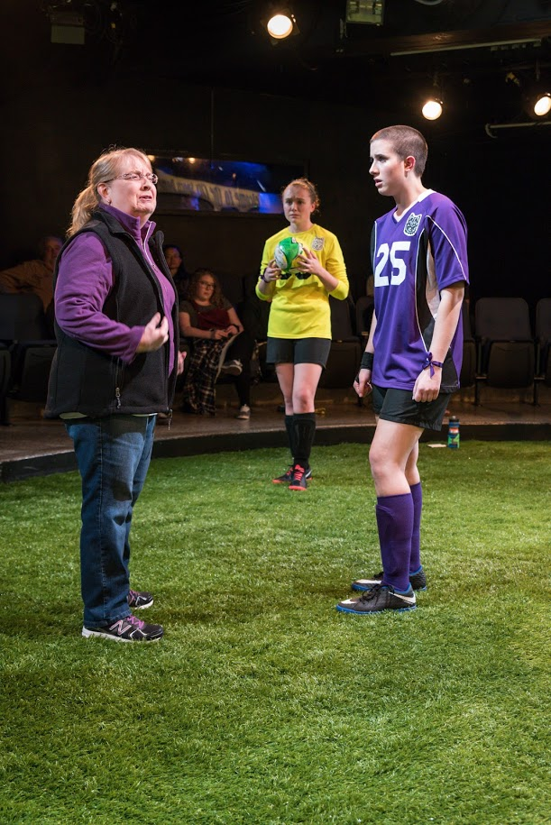
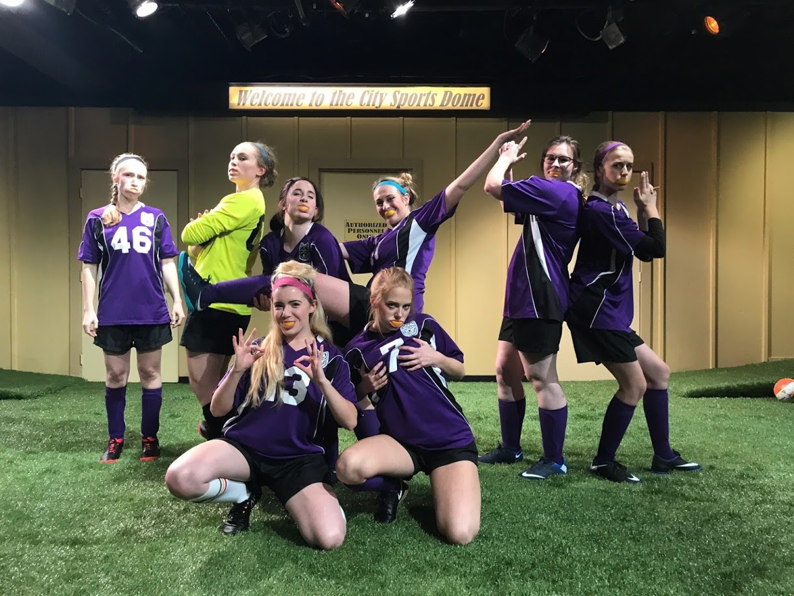
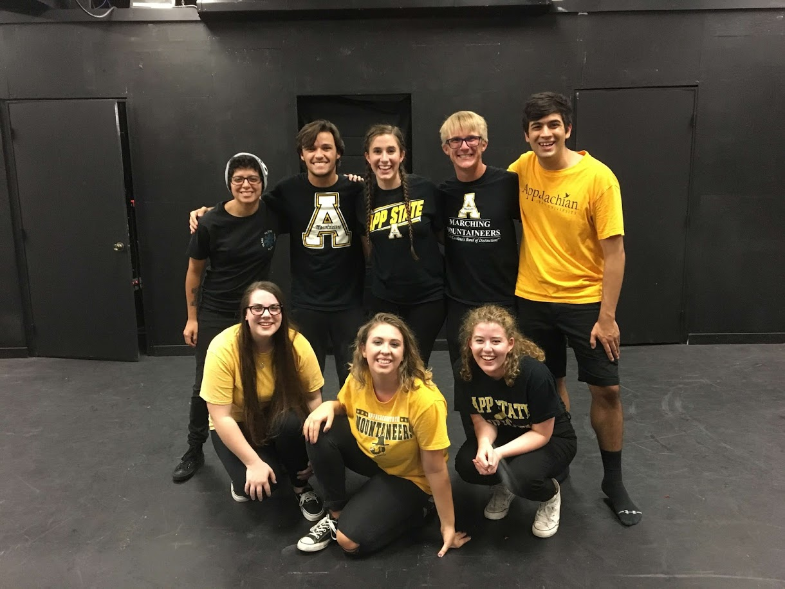
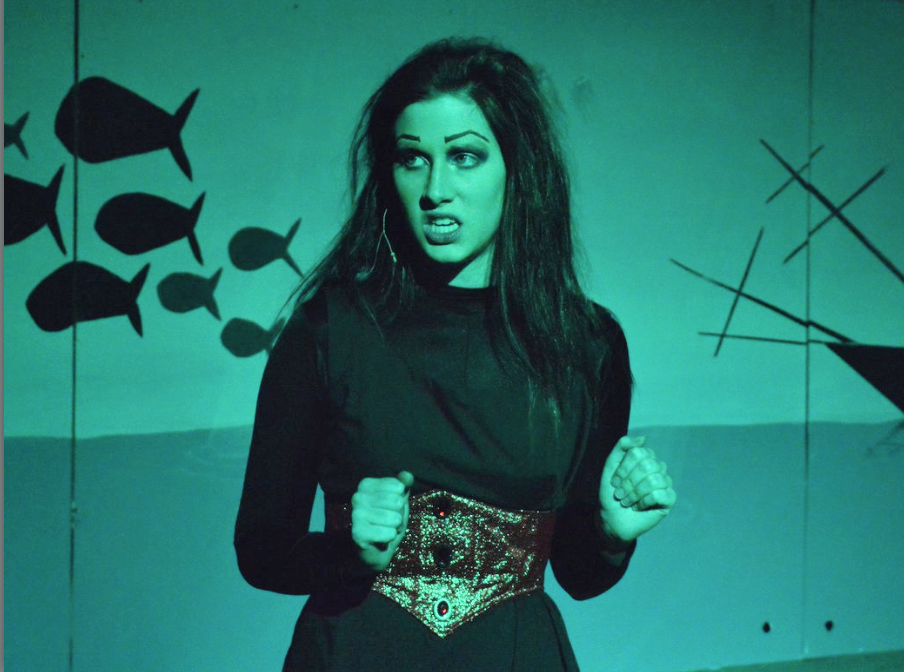

I have been able to be a part of some pretty incredible things in my life. Here they are:
In Fall 2018, I was able to play the role of #25 in The Wolves. She was the incredible captain of the high school girl’s soccer team.
 
Photos by Lynn Willis, Courtesy of the Appalachian State University Department of Theatre and Dance
I was also part of the dramaturgy team. Here is the research that I did for #13, location, and defensive skills.
In Fall 2017, I was able to a part of a show written and performed within a month by the ensemble.

In Fall 2015, I played Ursula in my high school’s production of The Little Mermaid
